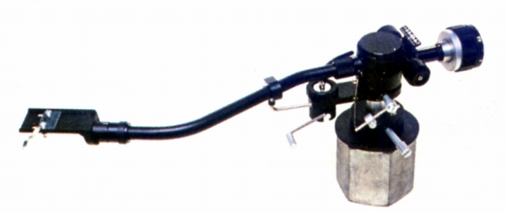
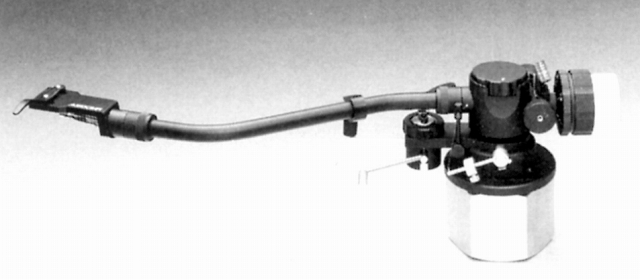

AC-3000MC


■価格 65,000円
■型式 スタティックバランス型ワンポイントサポート・ビスコードダンプ
■全長 345�o
■実行長 237�o
■オーバー・ハング 15�o
■トラッキングエラー 2.5゜（最大）
■針圧範囲 0〜3g
0.25gステップ
■アーム高さ調整
■アームベース穴
■アンチスケートディバイス あり
■アームリフター あり
■ラテラルバランサー あり
■カートリッジ自重 付属シェルAS-3PL込みで14〜33g
■線間容量
■発売 1978年頃
■販売終了 1991〜92年頃
■備考 価格は1978年頃のもの
ダンピング量可変
ヘッドシェルにキーロックピン採用
リード線に純銅線採用
アームパイプ交換可能
ダブルヘリコイドアームベース使用
標準装備の出力コードはMC型向け低抵抗1.5mのARR-T。
他に、低抵抗1ｍのARR-T/10、MM型向けの低容量タイプ1.5ｍのARC-T、低容量1mのARC-T/10あり。
対応カートリッジはベースモデルAC-300MK�Uと変わらないが、
オプションであった25〜27g対応のサブウェイトAW-5、
27〜33g対応のAW-3が標準で付属している。
なお標準的なAC-3000MCはS字型アームMC-300にシェルAS-4PLをセットしたものだが、
ストレート型のMC-SがセットされたAC-3000MC-S(65,000円）もあった。
オーディオクラフトのインデックスへ